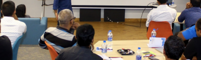

MakersofKerala
List of maker events happening all over Kerala
© 2018
Made by StudioBOFA
- 
3
Nov
Maker FestAmal Jyothi College, Kanjirappally→ 3
Nov
AI Series - Week - 2BHub, Trivandrum→3
Nov
Blockchain Interactive SessionBHub, Trivandrum→
